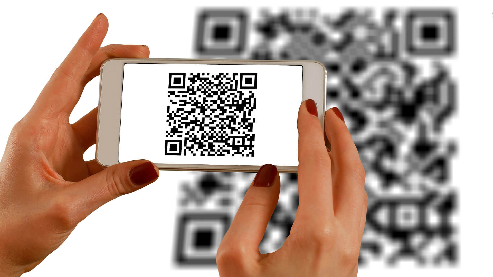

<ion-header>
  <ion-toolbar>
    <ion-title>scan</ion-title>
  </ion-toolbar>
</ion-header>

<ion-content>
  <ion-card>
    
    <ion-card-header>
      <ion-card-title>Scan Qr code </ion-card-title>
      <!-- <ion-card-subtitle>Card Subtitle</ion-card-subtitle> -->
    </ion-card-header>
  
    <ion-card-content>
      <div *ngIf="butonAuth==true"><ion-card color="success">
        <ion-card-header>
          <ion-card-title>Document authentique</ion-card-title>
        </ion-card-header>
        <ion-card-content>
          <ion-button expand="block" routerLink="/releve" (click)="sendReceiveData()" color="success">Get
            document</ion-button>
        </ion-card-content>
      </ion-card>
    </div>
    <div *ngIf=" buton==true"><ion-card color="danger">
        <ion-card-header>
          <ion-card-title>Document non authentique</ion-card-title>
        </ion-card-header>
        <ion-card-content>
          <!-- <ion-button expand="block" [routerLink]="['/releve']">Get document</ion-button> -->
        </ion-card-content>
      </ion-card>
    </div>
    <ion-button expand="block" (click)="scanBarcode()">Open Scanner</ion-button>
    </ion-card-content>
  </ion-card>
</ion-content>
